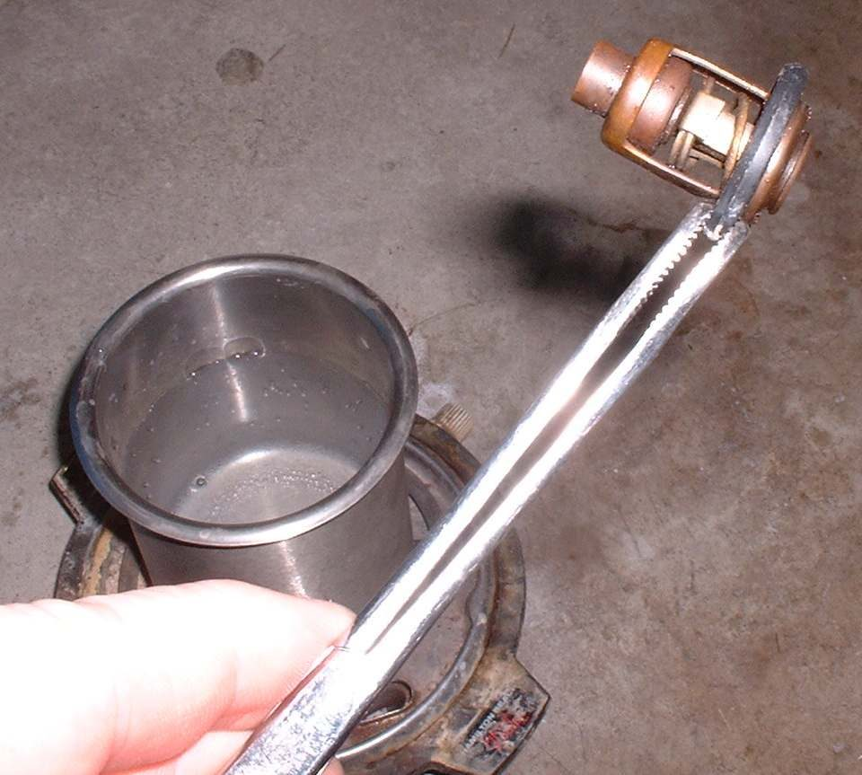

The thermostat is a valve in the cooling system. It stays closed while the engine is cold so the engine warms up quickly. It opens as the coolant heats, so coolant can flow to the radiator. A thermostat that stays shut makes the engine run hot. Test it when the temperature is high and the coolant level is correct.
Safety
- Let the engine cool fully. Hot coolant under pressure scalds. Do not open the radiator cap on a hot engine.
- Catch the coolant in a pan. It is poisonous to people and animals. Dispose of it properly.
- The pan of water for the test gets very hot. Keep your hands clear and use tongs.
You need
- The opening temperature printed on the thermostat. If it is not printed, use the value in your bike's manual.
- A cooking thermometer, a pan of water and a heat source.
- A new thermostat seal or gasket, and fresh coolant mix to top up.
Steps
- Check first that the coolant level is correct and the fan works: Check and top up coolant and Test the radiator fan and its switch.
- With the engine cold, drain enough coolant to bring the level below the thermostat housing. Follow the manual.
- Remove the housing cover and lift out the thermostat. Note which way up it sits.
- Look at it cold. A thermostat that is already open when cold is faulty.
- Hang the thermostat in the pan of water on a wire so that it does not touch the bottom. Put the thermometer in the water.
- Heat the water slowly. Watch the valve and the thermometer.
- The valve should start to open at about the temperature marked on it, and be clearly open as the water gets hotter.
- Let the water cool. The valve should close again.
- If it opens at the marked temperature and closes again, refit it the same way up, with a new seal.
- If it stays shut, opens late or stays open, fit a new thermostat of the same rating.
- Refill the coolant and bleed air as the manual says: Replace the coolant.
Notes
- Running without a thermostat is not advised. It controls the flow between engine and radiator, and the engine may run too cold or too hot.
- A thermostat of a cooler rating does not make the engine cool better. Use the rating in the manual.
If the thermostat is good
- Remove the radiator cap on a cold engine with the thermostat out and see whether coolant moves when the engine runs. If there is no flow, check the water pump: Check the water pump and impeller.
- If there is flow, look for a blocked radiator: Radiator is damaged, bent or blocked.
When to go to a workshop
- The engine overheats again after a good thermostat is fitted.
- Coolant is milky, or oil is milky: Oil is milky or creamy.